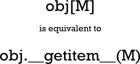
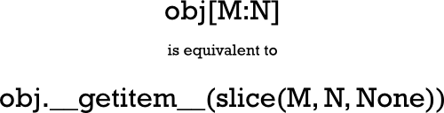
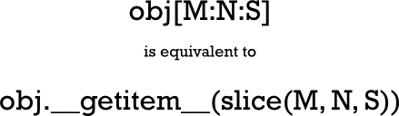
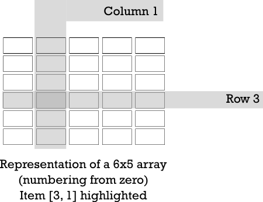
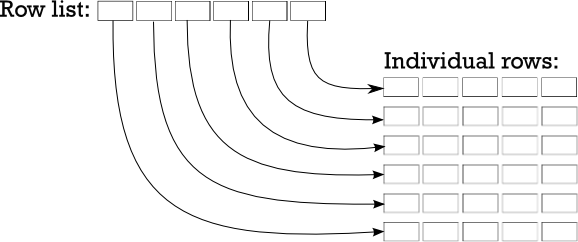

Hello and welcome back. This lesson covers these topics:
In general, programming models the real world. Keep that in mind and it will help you to choose appropriate data representations for specific objects. This may sound pretty straightforward, but in fact, it takes a considerable amount of experience to get it right.
Initially, you might struggle to find the best data structure for an application, but ultimately working through those struggles will make you a better programmer. Of course you could bypass such challenges and follow some other programmer's prior direction, but I wouldn't recommend doing that. There's no substitute for working through programming challenges yourself. You develop a more thorough understanding of your programs when you make your own design decisions.
As you write more Python, you'll be able to accommodate increasingly complex data structures. So far, most of the structures we've created have been lists or dicts of the basic Python types—the immutables, like numbers and strings. However, there's no reason you can't use lists, tuples, dicts, or other complex objects (of your own creation or created using some existing library) as the elements of your data structures.
Data structures are important within your objects, as well. You define the behavior of a whole class of objects with a class statement. This class statement defines the behavior of each instance of the class by providing methods that the user can call to effect specific actions. Each instance has its own namespace though, which makes it appear like a data structure with behaviors common to all members of its class.
Python's "array" module provides a way to store a sequence of values of the same type in a compact representation that does not require Python object overhead for each value in the array. Array objects are one-dimensional, similar to Python lists, and most code actually creates arrays from an iterable containing the relevant values. With large numbers of elements, this can represent a substantial memory savings, but the features offered by this array type are limited. For full multi-dimensional arrays of complex data types, you would normally go to the (third-party, but open source) NumPy package. In most computer languages, multiple dimensions can be addressed by using multiple subscripts. So the Nth item in the Mth row of an array called D would be D(M, N) in Fortran (which uses parentheses for subscripting).
>>> mylst = ["one", "two", "three"] >>> mylst[1] 'two' >>> mylst[1.3] Traceback (most recent call last): File "<stdin>", line 1, in <module> TypeError: list indices must be integers or slices, not float >>> mylst[(1, 3)] Traceback (most recent call last): File "<stdin>", line 1, in <module> TypeError: list indices must be integers or slices, not tuple >>>
A Python list may have only a single integer or a slice as an index; anything else will raise a TypeError exception such as, "List indices must be integers."
A list is a one-dimensional array, with only a single length. A two-dimensional array has a size in each of two dimensions (often discussed as the numbers of rows and columns). Think of it as a sequence of one-dimensional lists—an array of arrays. Similarly, consider a three-dimensional array as a sequence of two-dimensional arrays, and so on (although four-dimensional arrays are not used all that frequently).
In Python we can usually create a class to execute any task. You may remember that indexing is achieved by the use of the __getitem__() method. Let's create a basic class that reports the arguments that call that class's __getitem__() method. This will help us to see how Python indexing works.
The only two types that can be used as indexes on a sequence are indexes and slices. The contents within the square brackets in the indexing construct may be more complex than a regular integer. You won't usually work directly with slices, because in Python you can get the same access to sequences using multiple subscripts, separated by colons (often referred to as slicing notation). You can slice a sequence with notation like s[m:n], and you can even specify a third item by adding what is known as the stride (a stride of S causes only every Sth value to be included in the slice) using the form s[M:N:S]. Although there are no Python types that implement multi-dimensional arrays, the language is ready for them, and even allows multiple slices as subscripts. The NumPy package frequently incorporates slicing notation to help facilitate data subsetting.
>>> class GI:
... def __getitem__(self, *args, **kw):
... print("Args:", args)
... print("Kws: ", kw)
...
>>> gi = GI()
>>> gi[0]
Args: (0,)
Kws: {}
>>> gi[0:1]
Args: (slice(0, 1, None),)
Kws: {}
>>> gi[0:10:-2]
Args: (slice(0, 10, -2),)
Kws: {}
>>> gi[1, 2, 3]
Args: ((1, 2, 3),)
Kws: {}
>>> gi[1:2:3, 4:5:6]
Args: ((slice(1, 2, 3), slice(4, 5, 6)),)
Kws: {}
>>> gi[1, 2:3, 4:5:6]
Args: ((1, slice(2, 3, None), slice(4, 5, 6)),)
Kws: {}
>>> gi[(1, 2:3, 4:5:6)]
File "<stdin>", line 1
gi[(1, 2:3, 4:5:6)]
^
SyntaxError: invalid syntax
>>> (1, 2:3, 4:5:6)
File "<stdin>", line 1
(1, 2:3, 4:5:6)
^
SyntaxError: invalid syntax
>>>
Slices are allowed only as top-level elements of a tuple of subscripting expressions. Parenthesizing the tuple, or trying to use a similar expression outside of subscripting brackets, both result in syntax errors. A single integer index is passed through to the __getitem__() method without change. But the interpreter creates a special object called a slice object for constructs that contain colons. The slice object is passed through to the __getitem__() method. The last line in the example demonstrates that the interpreter allows us to use multiple slice notations as subscripts, and the __getitem__() method will receive a tuple of slice objects. This gives you the freedom to implement subscripting and slicing just about any way you want—of course, you have to understand how to use slice objects to take full advantage of the notation. For our purposes now, this isn't absolutely necessary, but the knowledge will be valuable later in many other contexts. The diagrams below summarize what we've learned so far about Python subscripting:

| Note | The above equivalence holds true whether M is an integer or a slice. In cases
where the slice is provided as a single argument, it should be considered equivalent
to one of the __getitem__() calls below. |


The list is a basic Python sequence, and like all the built-in sequence types, it is one-dimensional (that is, any item can be addressed with a single integer subscript of appropriate value). But multi-dimensional lists are often more convenient from a programmer's perspective, and, with the exception of the slicing notation, if you write a tuple of values as a subscript, then that tuple is passed directly through to the __getitem__() method. So it's possible to map tuples onto integer subscripts that can select a given item from an underlying list. Here's how a two-dimensional array should look to the programmer:

The most straightforward way to represent an array in Python is as a list of lists. Well actually, that would represent a two-dimensional array—a three-dimensional array would have to be a list of lists of lists, but you get the idea. So, in order to represent the array shown above, we could store it as either a list of rows or a list of columns. It doesn't really matter which type of list you choose, as long as you remain consistent. We'll use "row major order" (meaning we'll store a reference to the rows and then use the column number to index the element within that row) this time around.
For example, we could represent a 6x5 array as a six-element list, each item in that list consisting of a five-element list which represents a row of the array. To access a single item, you first have to index the row list with a row number (resulting in a reference to a row list), and then index that list to extract the element from the required column. Take a look:

Let's write some code to create an identity matrix. This is a square array where every element is zero except for the main diagonal (the elements that have the same number for both row and column), and values of one. When you are dealing with complicated data structures, the print module often presents them more readably than a print.
While it might be easier to bang away at a console window for small pieces of code, it's good practice to define an API and write tests to exercise that API. This will allow you to try and test different representations efficiently, and you are able to improve your tests as you go. Create testarray.py as shown:
"""
Test list-of-list based array implementations.
"""
import unittest
import arr
class TestArray(unittest.TestCase):
def test_zeroes(self):
for N in range(4):
a = arr.array(N, N)
for i in range(N):
for j in range(N):
self.assertEqual(a[i][j], 0)
def test_identity(self):
for N in range(4):
a = arr.array(N, N)
for i in range(N):
a[i][i] = 1
for i in range(N):
for j in range(N):
self.assertEqual(a[i][j], i==j)
if __name__ == "__main__":
unittest.main()
The tests are fairly limited at first, but even these basic tests allow you to detect gross errors in the code. Next, you'll need an arr module on which the test will operate. Let's start with a basic arr module for now. Create arr.py in the same folder as shown:
"""
Naive implementation of list-of-lists creation.
"""
def array(M, N):
"Create an M-element list of N-element row lists."
rows = []
for _ in range(M):
cols = []
for _ in range(N):
cols.append(0)
rows.append(cols)
return rows
Running testarray should show you all tests passing.
.. ---------------------------------------------------------------------- Ran 2 tests in 0.001s OK
By now you may be able to devise ways to make the array code simpler. Right now, our code is straightforward, but rather verbose. Let's trim it down a little by using a list comprehension to create the individual rows. Modify your code as shown:
"""
Naive implementation of list-of-lists creation.
"""
def array(M, N):
"Create an M-element list of N-element row lists."
rows = []
for _ in range(M):
cols = []
for _ in range(N):
cols.append(0)
rows.append(cols[0] * N)
return rows
All the tests should still pass:
.. ---------------------------------------------------------------------- Ran 2 tests in 0.001s OK
At the moment we are working strictly in two dimensions. But we are using "double subscripting"—[M][N], rather than the "tuple of subscripts" notation—[M, N] that most programmers use (and that the Python interpreter is already prepared to accept). So let's modify our tests to use that notation, and verify that our existing implementation breaks when called without change. Modify testarray.py as shown:
"""
Test list-of-list array implementations using tuple subscripting.
"""
import unittest
import arr
class TestArray(unittest.TestCase):
def test_zeroes(self):
for N in range(4):
a = arr.array(N, N)
for i in range(N):
for j in range(N):
self.assertEqual(a[i][j], 0)
self.assertEqual(a[i, j], 0)
def test_identity(self):
for N in range(4):
a = arr.array(N, N)
for i in range(N):
a[i][i] = 1
a[i, i] = 1
for i in range(N):
for j in range(N):
self.assertEqual(a[i][j], i==j)
self.assertEqual(a[i, j], i==j)
if __name__ == "__main__":
unittest.main()
The test output indicates that something isn't quite right in the array code after tuple-subscripting is used:
EE
======================================================================
ERROR: test_identity (__main__.TestArray.test_identity)
----------------------------------------------------------------------
Traceback (most recent call last):
File "testarray.py", line 19, in test_identity
a[i, i] = 1
TypeError: list indices must be integers or slices, not tuple
======================================================================
ERROR: test_zeroes (__main__.TestArray.test_zeroes)
----------------------------------------------------------------------
Traceback (most recent call last):
File "testarray.py", line 13, in test_zeroes
self.assertEqual(a[i, j], 0)
TypeError: list indices must be integers or slices, not tuple
----------------------------------------------------------------------
Ran 2 tests in 0.000s
FAILED (errors=2)
The only way to fix this is to define a class with a __getitem__() method, which will allow you direct access to the values passed as subscripts. This will make it easier to locate the correct element. Of course, the __init__() method has to create the lists and bind them to an instance variable that __getitem__() can access. The test code includes setting some array elements, so you also have to implement __setitem__(). (To respond properly to the del statement, a __delitem__() method should also be implemented, but this is not necessary for our immediate purposes.) Rewrite arr.py as shown:
"""
Class-based list-of-lists allowing tuple subscripting
"""
class array:
def __init__(self, M, N):
"Create an M-element list of N-element row lists."
self._rows = []
for _ in range(M):
self._rows.append([0] * N)
def __getitem__(self, key):
"Returns the appropriate element for a two-element subscript tuple."
row, col = key
return self._rows[row][col]
def __setitem__(self, key, value):
"Sets the appropriate element for a two-element subscript tuple."
row, col = key
self._rows[row][col] = value
With __getitem__() and __setitem__() in place on your array class, you'll start to see the tests pass again.
Using the standard subscripting API, you have built a way to reference two-dimensional arrays represented internally as a list of lists. If you wanted to represent a three-dimensional array, you'd have to change the code to operate on a list of lists of lists, and so on. However, the code might be more adaptable if it used just a single list and performed arithmetic on the subscripts to work out which element to access.
Now let's modify your current version of the arr module to demonstrate the principle on a 2-D array. We aren't going to extend the number of dimensions yet, but you might get an idea for how the code could be extended. Modify arr.py as shown:
"""
Class-based single-list allowing tuple subscripting
"""
class array:
def __init__(self, M, N):
"Create an M-element list of N-element row lists."
"Create an list long enough to hold M*N elements."
self._rows = []
for _ in range(M):
self._rows.append([0] * N)
self._data = [0] * M * N
self._rows = M
self._cols = N
def __getitem__(self, key):
"Returns the appropriate element for a two-element subscript tuple."
row, col = key
return self._rows[row][col]
row, col = self._validate_key(key)
return self._data[row*self._cols+col]
def __setitem__(self, key, value):
"Sets the appropriate element for a two-element subscript tuple."
row, col = key
self._rows[row][col] = value
row, col = self._validate_key(key)
self._data[row*self._cols+col] = value
def _validate_key(self, key):
"""Validates a key against the array's shape, returning good tuples.
Raises KeyError on problems."""
row, col = key
if (0 <= row < self._rows and
0 <= col < self._cols):
return key
raise KeyError("Subscript out of range")
The changes that have been made here are pretty much invisible to the code that uses the module.
The __init__() method now initializes a single list that is big enough to hold all rows and columns. It also saves the array size in rows and columns. Previous versions could rely on access to the lists to detect any illegal values in the subscripts; now it has to be done explicitly because the location of the required element in the list now has to be calculated. We can no longer rely on IndexError exceptions to detect an out-of-bounds subscript. The current __getitem__() and __setitem__() methods use a _validate_key() method to verify that the subscript values do indeed fall within the required bounds before using them.
Although all existing tests pass, this detail about the index bounds checking reminds us to add tests to verify that the logic works and that a KeyError exception is raised when illegal values are used. The resulting changes are not complex. Modify testarray.py as shown:
"""
Test list-of-list array implementations using tuple subscripting.
"""
import unittest
import arr
class TestArray(unittest.TestCase):
def test_zeroes(self):
for N in range(4):
a = arr.array(N, N)
for i in range(N):
for j in range(N):
self.assertEqual(a[i, j], 0)
def test_identity(self):
for N in range(4):
a = arr.array(N, N)
for i in range(N):
a[i, i] = 1
for i in range(N):
for j in range(N):
self.assertEqual(a[i, j], i==j)
def _index(self, a, r, c):
return a[r, c]
def test_key_validity(self):
a = arr.array(10, 10)
self.assertRaises(KeyError, self._index, a ,-1, 1)
self.assertRaises(KeyError, self._index, a ,10, 1)
self.assertRaises(KeyError, self._index, a ,1, -1)
self.assertRaises(KeyError, self._index, a ,1, 10)
if __name__ == "__main__":
unittest.main()
When all three tests pass, you can be confident in your bounds-checking logic. Keep in mind that it's just as important to make sure your program fails when it should, as it is to make sure it runs correctly when it should!
... ---------------------------------------------------------------------- Ran 3 tests in 0.000s OK
As long as the API remains the same, you'll have considerable flexibility and programming technique options. Let's consider alternative representations.
The array module defines a single data type (also called "array"), which is similar to a list, except that it stores homogeneous values (each cell can hold values of a given type only, that type being passed when the array is created). The changes required to use such an array instead of a list are minimal. Modify arr.py as shown:
"""
Class-based array allowing tuple subscripting
"""
import array as sys_array
class array:
def __init__(self, M, N):
"Create an list long enough to hold M*N elements."
"Create an M-element list of N-element row lists."
self._data = [0] * M * Nsys_array.array("i", [0] * M * N)
self._rows = M
self._cols = N
def __getitem__(self, key):
"Returns the appropriate element for a two-element subscript tuple."
row, col = self._validate_key(key)
return self._data[row*self._cols+col]
def __setitem__(self, key, value):
"Sets the appropriate element for a two-element subscript tuple."
row, col = self._validate_key(key)
self._data[row*self._cols+col] = value
def _validate_key(self, key):
"""Validates a key against the array's shape, returning good tuples.
Raises KeyError on problems."""
row, col = key
if (0 <= row < self._rows and
0 <= col < self._cols):
return key
raise KeyError("Subscript out of range")
The testing doesn't change in this case (note that the updated code in the arr module requires the numbers stored in the array.array to be integers), and so, if you updated your arr module correctly, then your tests should pass immediately. The advantage of this implementation (for applications using integer data) is most evident when you're working with extremely large data structures. In these cases, values can be packed closely together within memory, because the array.array structure does not store them as Python values. This could save large amounts of memory overhead with large datasets, and further smaller savings would result from not having to allocate memory for the lists that refer to rows or individual values.
| Modern Python | For truly large numerical arrays, the standard choice today is
NumPy, which provides multi-dimensional
typed arrays, extensive mathematical operations, and slicing notation that exactly matches what
is described in this lesson (e.g. a[1:3, 2:5] selects a sub-matrix). The
array.array type remains useful when you need a compact, typed, one-dimensional
sequence without the NumPy dependency. |
Some mathematical techniques use "sparse" data sets. These are usually representations of very large data sets where the majority of the values are zero (and therefore do not need to be duplicated). This technique lends itself to using a dict to store the non-zero values using the subscript tuple passed in to the __getitem__() method.
Since the data storage element does not provide any bounds checking, the methods should still do that. There is no need to initialize the dict with zeroes, because the absence of a value implies a zero! Modify arr.py as shown:
""" Class-based dict allowing tuple subscripting & sparse data """import array as sys_arrayclass array: def __init__(self, M, N): "Create an M-element list of N-element row lists."self._data = sys_array.array("i", [0] * M * N)self._data = {} self._rows = M self._cols = N def __getitem__(self, key): "Returns the appropriate element for a two-element subscript tuple." row, col = self._validate_key(key) try: return self._data[row, col] except KeyError: return 0return self._data[row*self._cols+col]def __setitem__(self, key, value): "Sets the appropriate element for a two-element subscript tuple." row, col = self._validate_key(key)self._data[row*self._cols+col] = valueself._data[row, col] = value def _validate_key(self, key): """Validates a key against the array's shape, returning good tuples. Raises KeyError on problems.""" row, col = key if (0 <= row < self._rows and 0 <= col < self._cols): return key raise KeyError("Subscript out of range")
The testing is somewhat simplified in this version, since zero values do not need to be asserted. (Please note that the current __setitem__() method is deficient in some ways; the storage of a zero should result in the given key being removed from the dict if present).
| Modern Python | The collections module in the standard library offers several
data structures relevant to this lesson's themes:
|
So now we have loads of options at our disposal to complete our various Python tasks. Having so much flexibility enables you to choose specific techniques to suit your specific needs. With some practice, you'll be able to make the most efficient compromises between efficient use of storage and adequate computation speed. You're doing a fine job so far! See you in the next lesson...